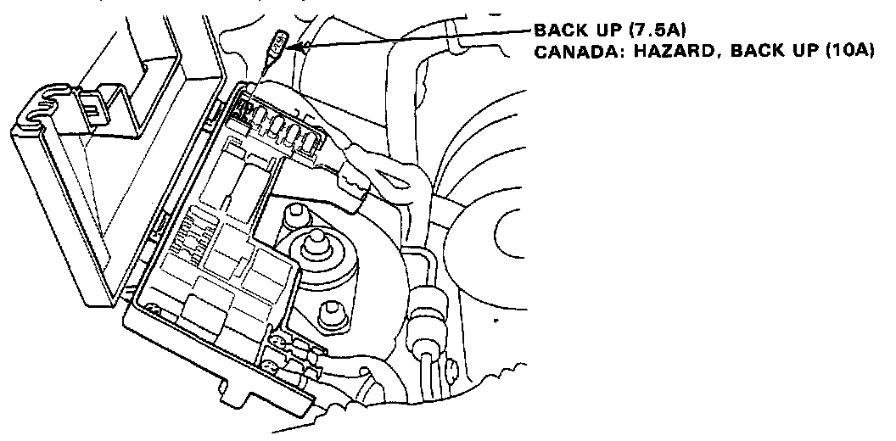

Without Scan Tool
ECU RESET PROCEDURE (This Must Be Done After Any Troubleshooting)1. Turn the ignition switch off.

2. Remove the BACK UP fuse (7.5A) from the under-hood fuse box for 10 seconds to rest ECU.
CANADA: Remove the HAZARD, BACK UP fuse (1OA) from the under-hood fuse box for 10 seconds to reset ECU.
If codes other than those listed above are indicated, count the number of blinks again. If the indicator is in fact blinking unusual codes, replace the original ECU.
The Check Engine light and ECU LED may come on, indicating a system problem, when, in fact, there is a poor or intermittent electrical connection. First, check the electrical connections, clean or repair connections if necessary.
If the Check Engine light is on and LED stays on, replace the ECU.
The Check Engine warning light and S4 light may light simultaneously when the self-diagnosis indicator blinks 6, 7 and 13. Check the PGM-FI system according to the PGM-FI control system troubleshooting, then recheck the S4 light.